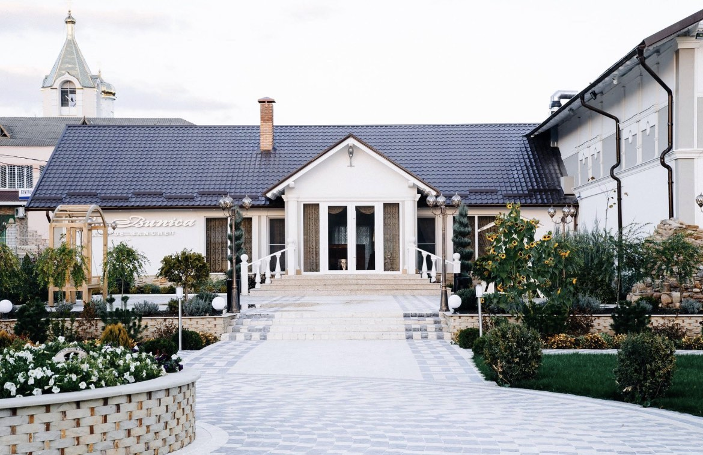

Brand-ul La Bunica a apărut pe piața din Moldova în anul 2011. Am început ca un bar și restaurant de 170 m²,cu activitate zilnică. Din 2012 ne-am specializat exclusiv în evenimente. Până în 2015 am efectuat nouă renovări majore. Schimbările au fost enorme. Echipa restaurantului La Bunica are o experiență de peste 11 ani, timp în care a învățat să fie o echipă unită, profesionistă, ce poate oferi soluții personalizabile pentru orice eveniment. Noi venim cu acțiuni concrete, eficacitatea cărora a fost demonstrată în timp și vă putem face să visați cu ochii deschiși! Suntem în pas cu noile schimbări. Aici este locul ideal pentru a celebra cel mai frumos moment din viața dumneavoastră precum este ziua nunții. Vă așteptăm cu mult drag să reveniți de fiecare dată. Înregistrarea căsătoriei în aer liber este o alternativă excelentă decât a unei înscrieri plictisitoare petrecute în grabă la Oficiul Stării Civile. Amintiți-vă cum ați visat la asta când ați vizionat filmele americane și imaginați-vă cât de emoționante vor fi fotografiile de nuntă făcute aici.
